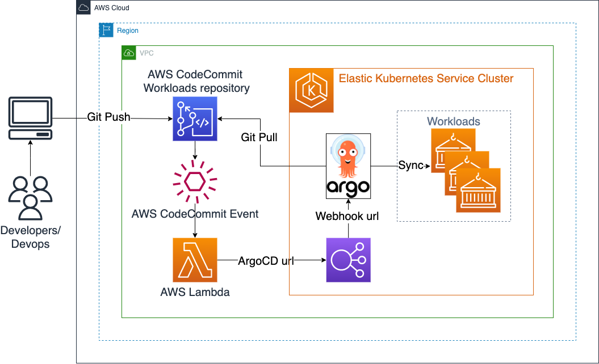
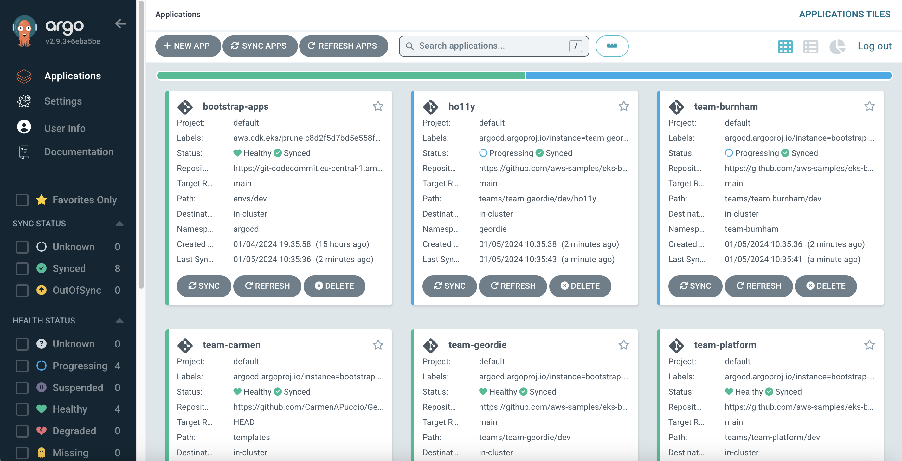

EKS Cluster with ArgoCD and Workloads in private AWS CodeCommit repository¤
Objective¤
This example shows how to provision an EKS cluster with:
- ArgoCD
- Workloads deployed by ArgoCD
- Private AWS CodeCommit repository to store the configurations of workloads
- Setup to trigger ArgoCD projects sync on git push to AWS CodeCommit repository
Pattern source: /lib/workloads-codecommit-construct/index.ts
Architecture¤

To better understand how ArgoCD works with EKS Blueprints, read the EKS Blueprints ArgoCD Documentation
- After a push to AWS CodeCommit repository notification trigger calls AWS Lambda
- AWS Lambda calls ArgoCD webhook URL to trigger ArgoCD projects sync
Prerequisites¤
Ensure that you have installed the following tools on your machine.
Deploy EKS Cluster with Amazon EKS Blueprints for CDK¤
- Clone the repository
git clone https://github.com/aws-samples/cdk-eks-blueprints-patterns.git
cd cdk-eks-blueprints-patterns
- Update npm
npm install -g npm@latest
- View patterns and deploy workloads-codecommit pattern
make list
npx cdk bootstrap
make pattern workloads-codecommit deploy
Verify the resources¤
- Run the update-kubeconfig command. You should be able to get the command from the CDK output message. More information can be found at https://aws-quickstart.github.io/cdk-eks-blueprints/getting-started/#cluster-access
aws eks update-kubeconfig --name workloads-codecommit-blueprint --region <your region> --role-arn arn:aws:iam::xxxxxxxxx:role/workloads-codecommit-blue-workloadscodecommitbluepr-VH6YOKWPAt5H
- Verify the resources created from the steps above.
$ kubectl get po -n argocd
NAME READY STATUS RESTARTS AGE
blueprints-addon-argocd-application-controller-0 1/1 Running 0 1h
blueprints-addon-argocd-applicationset-controller-7b78c7fc5dmkx 1/1 Running 0 1h
blueprints-addon-argocd-dex-server-6cf94ddc54-p68pl 1/1 Running 0 1h
blueprints-addon-argocd-notifications-controller-6f6b7d95ckhf6p 1/1 Running 0 1h
blueprints-addon-argocd-redis-b8dbc7dc6-dvbkr 1/1 Running 0 1h
blueprints-addon-argocd-repo-server-66df7f448f-kvwmw 1/1 Running 0 1h
blueprints-addon-argocd-server-584db5f545-8xp48 1/1 Running 0 1h
Get ArgoCD Url and credentials¤
until kubectl get svc blueprints-addon-argocd-server -n argocd -o json | jq --raw-output '.status.loadBalancer.ingress[0].hostname' | grep -m 1 "elb.amazonaws.com"; do sleep 5 ; done;
export ARGOCD_SERVER=`kubectl get svc blueprints-addon-argocd-server -n argocd -o json | jq --raw-output '.status.loadBalancer.ingress[0].hostname'`
export CC_REPO_NAME=eks-blueprints-workloads-cc
echo "ArgoCD URL: https://$ARGOCD_SERVER"
echo "ArgoCD server user: admin"
echo "ArgoCD admin password: $(kubectl -n argocd get secret argocd-initial-admin-secret -o jsonpath="{.data.password}" | base64 -d)"
Create notification trigger from AWS CodeCommit push to ArgoCD Sync¤
export LAMBDA_ARN=$(aws lambda get-function --function-name eks-blueprints-workloads-cc-webhook | jq -r .Configuration.FunctionArn)
cat > trigger.json <<EOF
[
{
"destinationArn": "${LAMBDA_ARN}",
"branches": [],
"name": "${CC_REPO_NAME}-trigger",
"customData": "${ARGOCD_SERVER}",
"events": [
"all"
]
}
]
EOF
aws codecommit put-repository-triggers --repository-name $CC_REPO_NAME --triggers file://trigger.json --no-cli-pager
rm trigger.json
Set AWS_REGION¤
export AWS_REGION=$(aws ec2 describe-availability-zones --output text --query 'AvailabilityZones[0].[RegionName]')
echo $AWS_REGION
Populate AWS CodeCommit with Blueprint workloads Sample repository¤
pushd ..
git clone https://github.com/aws-samples/eks-blueprints-workloads.git
git clone codecommit::$AWS_REGION://$CC_REPO_NAME
cd $CC_REPO_NAME
git checkout -b main
cd ..
rsync -av eks-blueprints-workloads/ $CC_REPO_NAME --exclude .git
cd $CC_REPO_NAME
git add . && git commit -m "initial commit" && git push --set-upstream origin main
popd
ArgoCD will receive notification and will start sync.

Destroy¤
To teardown and remove the resources created in this example:
-
Delete "bootstrap-apps" project in ArgoCD UI and wait until ArgoCD delete workloads
-
Delete deployed resources
cd cdk-eks-blueprints-patterns
make pattern workloads-codecommit destroy
- Delete cloned repositories (
if necessary)
pushd ..
rm -rf eks-blueprints-workloads-cc
rm -rf eks-blueprints-workloads
popd